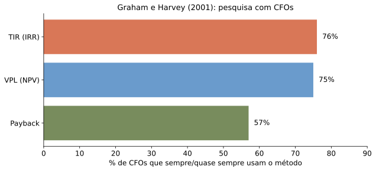
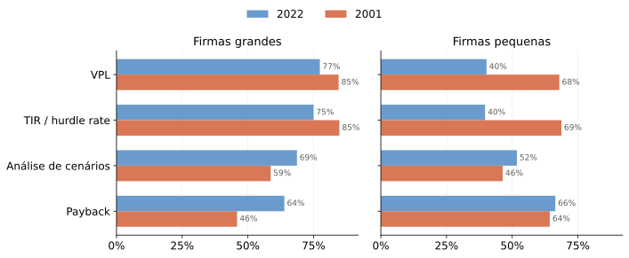
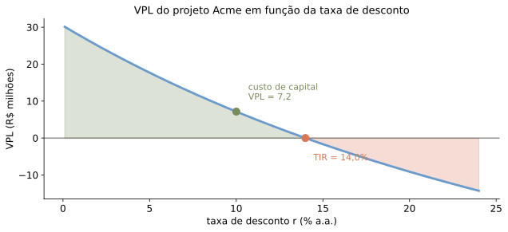
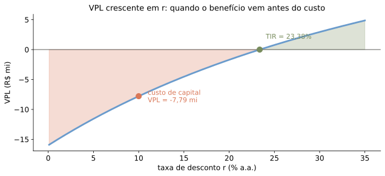
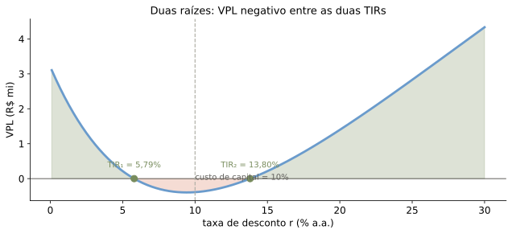
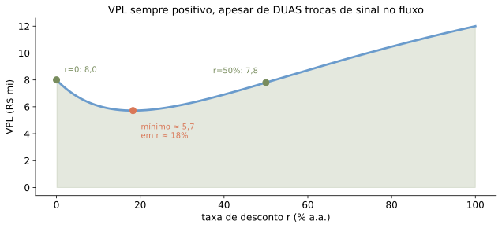
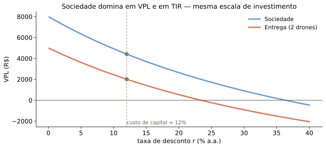
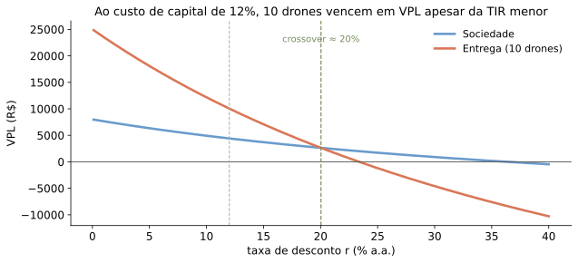
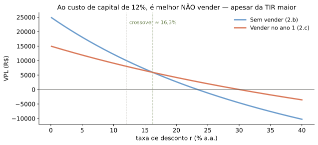

%%{init: {"flowchart": {"htmlLabels": false, "padding": 30}}}%%
flowchart LR
A[Fluxos de caixa do projeto] --> B[Descontar a r]
B --> C[VPL]
C --> D{VPL > 0?}
D -->|sim| E[Investir]
D -->|não| F[Recusar]
Dado um conjunto de projetos, qual regra de decisão a firma deve usar para escolher?
“Em um mercado perfeito, o valor de se produzir uma maçã a mais independe da disposição do fazendeiro em comê-la.”
\[\text{VPL} = VP(\text{Benefícios}) - VP(\text{Custos})\]
%%{init: {"flowchart": {"htmlLabels": false, "padding": 30}}}%%
flowchart LR
A[Fluxos de caixa do projeto] --> B[Descontar a r]
B --> C[VPL]
C --> D{VPL > 0?}
D -->|sim| E[Investir]
D -->|não| F[Recusar]
Aceitar um projeto X não muda o valor da firma pelo fluxo de X — muda pelo seu VPL.
| Valor de mercado (R$ milhões) | Recusar projeto X | Aceitar projeto X |
|---|---|---|
| Caixa | 1 | 0 |
| Outros ativos | 9 | 9 |
| Projeto X | 0 | VP |
| Total | 10 | 9 + VP |
Aceitar aumenta o valor da firma sempre que \(VP > 1\), i.e., sempre que o VPL do projeto é positivo.
A taxa de desconto deve refletir o risco do projeto (a melhor alternativa de mercado com o mesmo perfil de risco — voltaremos a isso).
Gitman e Forrester (1977): apenas ~10% das grandes firmas usavam o VPL como método principal de decisão. A evidência mudou desde então:

Fonte: Graham e Harvey (2001).
Percentual de CFOs que usam cada regra sempre ou quase sempre:

Em 2022: grandes usam sobretudo VPL e TIR/hurdle rate; pequenas, payback.
Hurdle rate: taxa mínima de retorno exigida; veremos mais adiante como estimá-la.
Fonte: Graham (2022), Tabela I.
Dada uma taxa de desconto \(r\):
\[VPL(r) = -81,6 + \frac{28}{r}\left(1 - \frac{1}{(1+r)^4}\right)\]
Com custo de capital estimado em \(r = 10\%\):
\[VPL = 7,2 > 0\]
O projeto aumenta o valor da firma.

\[VPL(r^*) = 0 \quad\Longrightarrow\quad r^* = TIR = 14\%\]
Mas cuidado: em geral a TIR precisa ser usada com cautela.
Voltando à Acme, com limite de 2 anos:
Custo do erro: o VPL de R$ 7,2 mi é perdido.
TIR funciona bem (coincide com o VPL) quando o projeto é simples:
Depois de uma vitória por 8 a 0…
Fluxo líquido: benefício hoje, custo depois. Valores e prazos hipotéticos.
\[0 = 32 - \frac{16}{1+TIR} - \frac{16}{(1+TIR)^2} - \frac{16}{(1+TIR)^3} \;\Longrightarrow\; TIR = 23,38\%\]
Note que \(\mathrm{TIR} = 23,38\% > r = 10\%\).
Pela regra da TIR: aceitar.
\[VPL = 32 - \frac{16}{1{,}1} - \frac{16}{1{,}1^2} - \frac{16}{1{,}1^3} = -R\$7,79\text{ mi} < 0\]
A regra da TIR e a regra do VPL discordam! Qual foi o problema?

Quando o benefício ocorre antes do custo, o VPL é função crescente de r — o oposto do caso usual. A regra da TIR sai invertida.
Trocas de sinal
Suponha que a rescisão de Filipe Luís envolvesse também um pagamento de R$ 19,2 mi ao final do ano 10:
Valores em R$ milhões.
Há duas TIRs: \(TIR_1 = 5,79\% < 10\%\) e \(TIR_2 = 13,80\% > 10\%\).
Procedimentos numéricos tipicamente reportam a primeira raiz que encontrarem.

Ao custo de capital de 10% (entre as duas raízes), o VPL é negativo.
Mesma rescisão: \(+32\) hoje, \(-16\) nos anos 1–3, e um pagamento extra de \(F\) no ano 10. Varie \(F\):
Um slider muda o número de TIRs de 1 para 2 e depois para nenhuma — o VPL(10%) permanece sempre bem definido.
Suponha, em vez dos acordos anteriores, que a proposta fosse: R$ 24 mi imediatamente, R$ 8 mi nos anos 1 a 3, e R$ 32 mi ao final do ano 4.
Valores em R$ milhões.

Mesmo com duas trocas de sinal, pode não existir TIR: o VPL nunca cruza zero — o oposto do caso anterior (ali, duas trocas de sinal geraram duas raízes).
Revendo os quatro casos desta aula, num só gráfico. Linha tracejada: custo de capital, \(r = 10\%\).
Mesma escala
O que é preferível: 10% de retorno sobre R$ 10.000, ou 1% sobre R$ 200.000?
Se a escala do investimento dobra (dispêndio e receitas \(\times 2\)):
Alternativa 1 — sociedade
\[-10.000 \to +6.000, +6.000, +6.000\]
\(VPL = 4.411\), \(TIR = 36,3\%\)
Alternativa 2 — entrega (2 drones)
\[-10.000 \to +5.000, +5.000, +5.000\]
\(VPL = 2.009\), \(TIR = 23,4\%\)
Ambas as métricas concordam: sociedade vence em VPL e em TIR.

Alternativa 2.b — entrega com 10 drones: multiplicam-se gastos e receitas por 5.
\[-50.000 \to +25.000, +25.000, +25.000\]
\[VPL = -50.000 + \frac{25.000}{1{,}12} + \frac{25.000}{1{,}12^2} + \frac{25.000}{1{,}12^3} = 10.046\]

A TIR maior (sociedade) não implica o maior VPL quando a escala é diferente.
Compare a alternativa de 10 drones (2.b) com vender o negócio já no ano 1 por R$ 40.000 adicionais (2.c):
\[-50.000 \to +65.000 \quad (\text{apenas em } t=0,1)\]
\(TIR_{2.c} = 30\% > TIR_{2.b} = 23,4\%\). Mas e o VPL? E para taxas distintas?

TIR maior não significa a melhor decisão quando o momento dos fluxos difere.
A firma escolhe entre dois fornecedores de servidores, com prazos diferentes:
| Fornecedor | PV a 10% | t=0 | t=1 | t=2 | t=3 |
|---|---|---|---|---|---|
| A | -12,49 | -10 | -1 | -1 | -1 |
| B | -10,47 | -7 | -2 | -2 | — |
Custo de A: primeiro anuitiza o gasto inicial de R$ 10 mi ao longo de 3 anos:
\[10 = \frac{x}{1+r} + \frac{x}{(1+r)^2} + \frac{x}{(1+r)^3} \;\Longrightarrow\; x \approx 4,02\]
Somando a manutenção de R$ 1 mi/ano:
\[EAA_A = -5,02\]
Mesmo procedimento para B (anuitizar R$ 7 mi em 2 anos, \(r=10\%\)):
\[EAA_B = -6,03\]
Fornecedor A é o mais barato por ano, apesar de ter o VPL total mais negativo — porque dura mais.
Outra maneira de obter o mesmo resultado, direto do VPL:
\[VPL = \frac{EAA}{r}\left(1 - \frac{1}{(1+r)^N}\right)\]